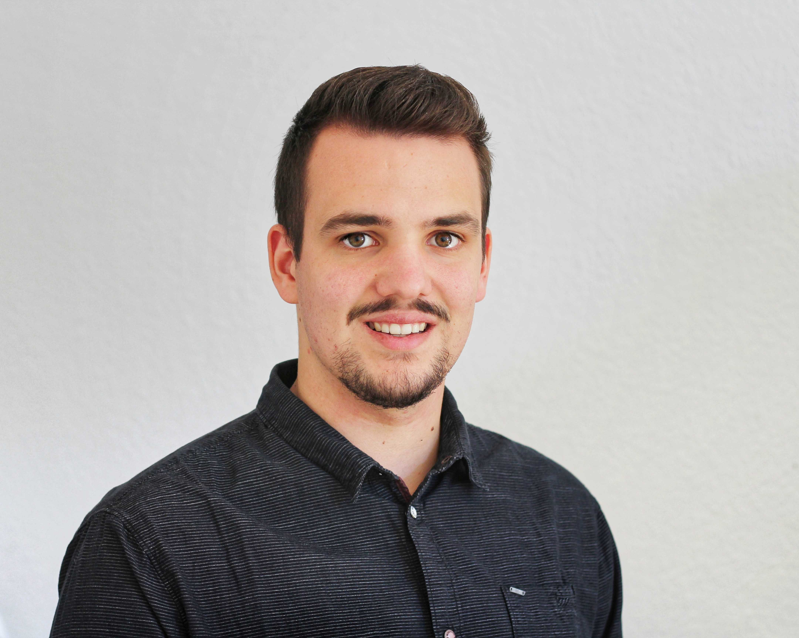

|
I am a first year PhD student at the Center for medical Image Analysis and Navigation (CIAN) of the University of Basel. My work is supervised by Philippe Cattin and Florian Thieringer. I hold a bachelor's and a master's degree in biomedical engineering, both of which I finished best in class. Email / Google Scholar / Github / LinkedIn |
 |
{kind=link}
|
I'm interested in medical image analysis and 3D deep learning. My current research is part of the MIRACLE II project and focuses on deep learning based automatic patient-specific implant generation methods. |
 |
|
Paul Friedrich, Julia Wolleb, Florentin Bieder, Florian M. Thieringer, Philippe C. Cattin arXiv preprint, 2023 arXiv Advances in 3D printing of biocompatible materials make patient-specific implants increasingly popular. The design of these implants is, however, still a tedious and largely manual process. Existing approaches to automate implant generation are mainly based on 3D U-Net architectures on downsampled or patch-wise data, which can result in a loss of detail or contextual information. Following the recent success of Diffusion Probabilistic Models, we propose a novel approach for implant generation based on a combination of 3D point cloud diffusion models and voxelization networks. Due to the stochastic sampling process in our diffusion model, we can propose an ensemble of different implants per defect, from which the physicians can choose the most suitable one. We evaluate our method on the SkullBreak and SkullFix datasets, generating high-quality implants and achieving competitive evaluation scores. |